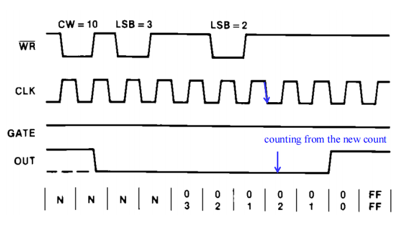
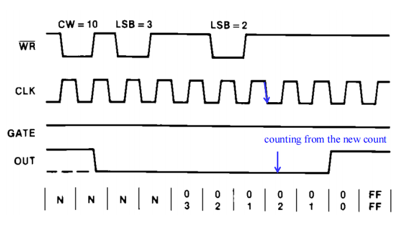
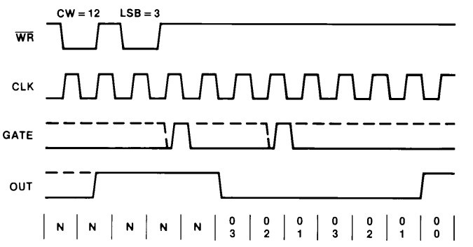
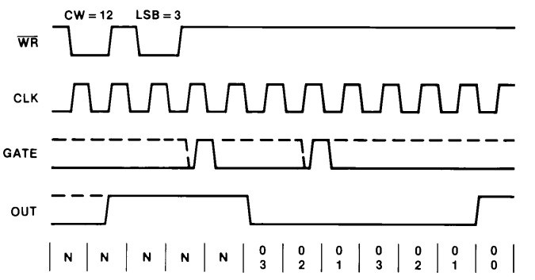

Basic IO interface¶
约 19635 个字 8 行代码 122 张图片 预计阅读时间 68 分钟
INTRO I/O interface¶
硬件接口是指不同设备之间的连接和通信方式，它将计算机与外部设备连接在一起，从而使它们能够协同工作。

硬件接口的类型：
- 信息流动方向
- 输入接口
- 输出接口
- 信号类型
- 模拟接口
- 数字接口
- 数据传输类型
- 串行接口
- 并行接口
一个I/O接口单元通常包含以下部分：
- 读/写控制逻辑
- 数据总线缓冲器
- 端口寄存器（如端口A、端口B）
- 控制和状态寄存器
Key Points about I/O interface¶
如何将I/O设备与CPU连接？
- 输出接口采用锁存器（Latches）
- 输入接口采用三态缓冲器（Three-state buffers）
如何为I/O设备分配地址空间？
- 有两种方案：独立I/O（Isolated I/O）与存储器映射I/O（Memory mapped I/O）
如何进行I/O端口译码？
- 相关信号包括：内存地址、#BHE与#BLE、#IORC与#IOWC
如何实现处理器与I/O设备之间的同步？
主要有以下几种方案：
- 无条件传送（适用于“总是就绪”的设备）
- 脉冲同步（strobing）
- 握手与轮询（handshaking and polling）
- 中断驱动I/O
- 通道控制I/O（如DMA）
Isolate and memory mapped I/O¶
- 接口I/O有两种不同方式：
- 独立I/O（Isolated I/O）：使用 IN 和 OUT 指令在微处理器的累加器（或内存）与I/O设备之间传输数据。
- 存储器映射I/O（Memory mapped I/O）：任何涉及内存的指令都可以完成数据传送。
- 个人计算机（PC）采用的是独立I/O方式，而不是存储器映射I/O。
Isolated I/O¶
- 在Intel体系结构的系统中，最常用的I/O传输技术是独立I/O。
- "独立"指的是I/O地址空间与内存空间完全分离，各自独立。
- 独立I/O设备的地址（称为端口）与内存地址分开管理。
优点：
端口和内存地址分离，因此用户可以将内存空间全部用于存储，而无需腾出部分空间给I/O设备。
缺点：
- I/O与微处理器间的数据传输必须通过IN、INS、OUT、OUTS等专用指令完成。
- 需要专门的I/O控制信号（如用M/IO和W/R生成），以区分I/O读（IORC）和I/O写（IOWC）操作。
- 由于必须使用特殊的I/O指令，I/O操作整体上比存储器慢。编程相对复杂，需要专门的I/O操作指令。
Memory mapped I/O¶
- 存储器映射I/O不使用IN、INS、OUT或OUTS等专用I/O指令。
- 它允许任何可以在微处理器和内存之间传输数据的指令也可用于I/O操作。
优点：
- 由于I/O设备与内存同处于一块地址空间，CPU访问I/O与访问内存速度一致，实现更快的I/O操作。
- 编程简单，访问I/O设备与访问普通内存一样，无需特殊指令，指令统一。
缺点：
- I/O设备和内存共享同一地址空间，导致I/O地址空间受限。如果I/O设备数量过多，可能无法为所有设备分配足够的地址。
- 如果I/O设备响应较慢，可能会拖慢CPU对内存的访问速度，影响整体系统性能。

Personal Computer IO map¶
PC（个人计算机）将部分I/O地址空间分配给专用功能：
- 端口地址从 0000H 到 03FFH 的 I/O 区域保留给系统使用；
- 端口地址从 0400H 到 FFFFH 则可供用户使用。
PC 的 I/O 地址空间和存放内存中断向量表的那段内存有各自独立的寻址方式，互不重叠，所以不会互相占用或冲突。
Classification of Logic ICs¶

TTL（晶体管-晶体管逻辑，Transistor-Transistor Logic）逻辑电路
- 一种早期出现的双极型集成电路（IC）
- 驱动能力强，速度较高（5-10纳秒）
- 功耗较大
CMOS逻辑电路
- 功耗比TTL低
- 早期速度较慢（25-50纳秒）
- 现在速度已超过TTL
TTL Logic Levels¶
TTL（晶体管-晶体管逻辑）电路传统上使用5V电源供电，而与TTL兼容的CMOS器件则采用3.3V电源。
- TTL信号必须符合下述对逻辑“1”和逻辑“0”的电平规范：
Output 比 input 要严格0.4v
CMOS Logic Levels¶
- CMOS 支持多种电源电压范围 （如 5V、3.3V、1.8V）。
- CMOS 信号的“1”和“0”必须根据电源电压（VCC）满足特定的电平标准。一般规范如下：
Output 比 input 要严格 0.2 Vcc

Example
在进行连接时，需要注意，输出端的电压是否落在输入端的电压范围内。
例如这里吧TTL接在cmos，由于ttl的输出高电平最低可能是2.4，而cmos的输入高电平最低是3.5，所以无法正常工作。
反过来就可以。
Info
TTL 在现代设备中已经很少见：TTL 主要出现在一些老旧设备中（如 82C55、RS-232）。大多数现代接口（如 USB、PCIe）已不再使用 TTL 信号，这是因为 TTL 的功耗较大，且可扩展性有限。
CMOS 在新设计中占主导地位：低电压 CMOS 兼容性已成为现代接口的标准，原因在于其高效和易于扩展。
旧设备通常用电平转换器兼容：当需要 TTL 兼容时，会使用电平转换器或电压转换芯片，在 TTL 和 CMOS 逻辑电平之间进行桥接。
Interfacing Circuitry for input Devices¶
输入设备接口有两个主要注意事项：
- 当输入设备连接到微处理器时，应保证其TTL/CMOS兼容。
- 需要减少或消除输入设备上的噪声干扰。
例如，开关类设备：
- 机械开关本身并不是TTL/CMOS兼容的输入设备。需要通过适配电路将其转为TTL/CMOS兼容信号。
- 由于开关在按下或释放时会产生 “抖动”（bounce），导致触点瞬间多次导通和断开，因此需要对信号进行消抖处理。

展示了如何将一个拨动开关正确接入，作为输入设备使用：
- 当开关闭合时，其一端连接到地（GND），输出为有效的逻辑0电平。
- 在开关断开（开路）时，通过上拉电阻（pull-up resistor），输出信号保持为逻辑1电平。
常用的上拉电阻阻值在1K欧姆到10K欧姆之间。
机械开关在按下或释放时总会产生噪声（抖动现象）。

为了解决这种抖动带来的问题，有多种消抖方法可供选择：
- 使用双刀开关并配合触发器（flip-flop）
- 使用双刀开关配合反相器（NOT门）
- 低通滤波器加施密特触发器（schmitt trigger）
- 多级移位寄存器进行采样
- 软件延时采样消抖
当来自开关的 Q 输入变为逻辑0时，它会改变触发器的状态，如果开关触点因抖动而离开 Q 输入，触发器会保持稳定，状态不会改变，因此消除了抖动现象。
(a)利用了两个与非门（NAND Gates, 74LS00）组成的 SR 锁存器。
- 一个 SPDT（单刀双掷）开关。
- 两个 上拉电阻（1K ）：确保当开关悬空时，输入端为高电平 (Logic 1)。
- 两个 与非门：交叉连接形成 SR 锁存器。
工作原理：
- 静止状态：假设开关接在上面 (S)。此时 S 端接地（输入 0）， R 端通过电阻上拉（输入 1）。根据 SR 锁存器逻辑（低电平有效），输出置位 (Set)为 1。
- 切换过程：当拨动开关向下时，开关首先离开上面的触点。
-
抖动的发生：
- 开关在离开上触点和接触下触点的中间过程（或者在接触瞬间弹开），开关处于“悬空”状态。
- 此时，S 和 R 都通过电阻接 VCC ，即高电平。
- 对于 SR 锁存器，输入 (1, 1) 是 “保持” (Hold/Memory) 状态。电路会维持上一次的状态不变。
-
接触新触点：当开关最终触碰到下面 (R) 时， R 变为 0， S 为 1。锁存器被 复位 (Reset)， Q 变为 0。
- 下触点抖动：如果开关在下触点发生弹跳（接触-断开-接触），电路会在“复位 (0,1)”和“保持 (1,1)”之间切换。因为“保持”状态就是保持刚才的“复位”结果，所以输出一直稳定为 0，不会出现抖动。
(b) 利用两个NOT Gates 首尾相连，形成一个双稳态电路（Bistable Circuit），也就是一个最基础的存储单元（类似于 SRAM 的核心）。
- 一个 SPDT 开关。
- 两个 反相器：Pin 2 接 Pin 3，Pin 4 接 Pin 1，形成反馈环路。
工作原理：
- 反馈锁定：电路由两个NOT Gates 首尾相连，第一个NOT Gate 的输出（Pin 2）接到第二个的输入（Pin 3），第二个NOT Gate 的输出（Pin 4）又回馈到第一个的输入（Pin 1），形成一个闭环。如果输入为 1，经过两级反相后又回到 1。这样，电路能“锁住”自身状态（0 或 1），即使输入端暂不变。
- 开关强制覆盖：开关直接连接至输入端（Pin 1）。当开关接地时，由于其低阻抗（近似为 0），它可以强制将输入电压拉低到 0，有效覆盖反馈信号。
- 消抖过程：开关将输入拉低为 0 时，经过两次反相，输出 \(Q\) 为 0；此时电路状态已被“写入”。
- 抖动产生时：当开关因弹跳暂时断开（悬空），不再有强制拉低信号，反馈环路立即“接管”控制，维持原来的输出电平（状态），使电路在抖动期间输出不会改变。
- 状态翻转：只有当开关拨到另一端、输入端被施加相反电平时，反馈环才会“更新”状态，输出才发生翻转。
使用低通滤波器和施密特触发器消抖。
开关通常会抖动 5-10 毫秒。
- 消抖可以通过将信号接入多级移位寄存器实现。
- 连接一个 100 Hz (0.01s变一次) 的时钟，每 10 毫秒对信号采样一次。
- 当所有采样值均为高电平时，SR 触发器被置位；当所有采样值均为低电平时，SR 触发器被复位。
Interfacing Circuitry for output Devices¶
输出设备比输入设备更加多样，但它们的接口方式通常较为统一。
- 与输出设备接口时，需要匹配设备与微处理器之间的电压和电流特性。
-
微处理器的输出电压通常符合 TTL 标准：
- 逻辑 0 = 0.0 V 到 0.4 V
- 逻辑 1 = 2.4 V 到 5.0 V
-
微处理器及许多接口元件的电流能力低于标准 TTL 。
- 逻辑 0 = 0.0 到 2.0 mA
- 逻辑 1 = 0.0 到 400 μA
-
下图展示了两种为点亮 LED 提供足够电流（10 mA）的方法：
- (a) 用三极管驱动
- (b) 用 TTL 反相器
(b): 使用 TTL 反相器 (7404)这是一个相对简单的电路。TTL 反相器在这里充当电流“吸入”端 (Current Sink)。逻辑：当输入为 1 时，反相器输出 0 (低电平，接近 0V)，电路导通，LED 点亮。电流路径：\(V_{CC} (5\text{V}) \rightarrow \text{LED} \rightarrow \text{电阻} \rightarrow \text{反相器输出引脚} \rightarrow \text{地}\)。
计算步骤：
- 电源电压 (\(V_{CC}\))：\(5\text{ V}\)。
- LED 压降 (\(V_{LED}\))：\(2.0\text{ V}\) (这是红光/绿光 LED 的典型值)。
- 电阻上的电压 (\(V_R\))：剩下的电压全部由电阻承担。
- 确定目标电流：题目给定 LED 需要电流 \(I = 10\text{ mA} = 0.01\text{ A}\)。
- 欧姆定律计算电阻：
-
结果：计算结果是 \(300\ \Omega\)。图中选择使用了 \(330\ \Omega\) 的电阻，因为 \(330\ \Omega\) 是最接近 \(300\ \Omega\) 的标准电阻阻值（E12系列）。
-
标准版本的 TTL 反相器在逻辑 0 状态下可提供高达 16 mA 的电流，
- 足以驱动标准 LED。
(a) 中，我们选择用开关三极管代替 TTL 缓冲器。
这个电路比 TTL 反相器稍复杂，因为三极管本质上是一个电流放大器。我们重点要计算的是基极电阻（Base Resistor）。
工作原理：
- CPU 输出高电平\(\rightarrow\)基极获得电流\(\rightarrow\)三极管导通\(\rightarrow\)LED 亮。
参数设置：
- 三极管放大倍数（增益, \(\beta\)）：\(100\)
- CPU 高电平输出电压：\(V_{OH} = 2.4\text{ V}\)（取标准 TTL 最小输出高电平）
- 三极管基极-发射极压降：\(V_{BE} = 0.7\text{ V}\)（硅管通用值）
-
目标集电极电流（LED 工作电流）：\(I_C = 10\text{ mA}\)
-
计算基极电流 \(I_B\)
三极管公式：\(I_C = \beta \times I_B\)
$$ I_B = \frac{I_C}{\beta} = \frac{10\,\text{mA}}{100} = 0.1\,\text{mA} $$
- 计算基极回路电阻 \(R\)
基极回路路径：CPU输出 \(\rightarrow\) 电阻 \(\rightarrow\) 基极 \(\rightarrow\) 发射极（地）
电阻上的电压降：
$$ V_R = V_{in} - V_{BE} = 2.4\,\text{V} - 0.7\,\text{V} = 1.7\,\text{V} $$
欧姆定律计算电阻：
$$ R = \frac{V_R}{I_B} = \frac{1.7\,\text{V}}{0.1\,\text{mA}} = \frac{1.7\,\text{V}}{0.0001\,\text{A}} = 17{,}000\,\Omega = 17\,\text{k}\Omega $$
计算结果为 \(17\,\text{k}\Omega\)，但因为标准阻值只有 \(18\,\text{k}\Omega\)，所以实际选用 \(18\,\text{k}\Omega\)。
Info
假设我们需要让微处理器控制一个 12V 直流、1A 的电机。
- 不能直接用 TTL 反相器：
- 12V 的信号会烧坏反相器
- 电流也远远超过了反相器16mA的最大提供能力
- 也不能直接用 2N2222 三极管：
- 其最大电流只有250mA到500mA（取决于封装），达不到要求
- 解决办法是用达林顿对（Darlington Pair）器件，比如 TIP120：
- 价格大约 0.25 美元，有散热装置时可以承受 4A 电流
达林顿对必须配备散热片，以应对大电流带来的发热。必须并联二极管，以防止达林顿对被感性负载的反向电动势（感应反冲电流）损坏。
这里的计算过程类似，经过两次压降，电流放大系数为 7000，所以加在电阻的电压为\(2.4-0.7-0.7=1V\)，所以电阻为\(1V/1A/7000=7K\Omega\)，所以选择\(7K\Omega\)接近的\(6.2K\)电阻。
Basic input output interfaces¶
Quote
- “IN”指的是将数据从I/O设备传送到微处理器中。
- “OUT”指的是将数据从微处理器输出到I/O设备。
- 最基本的输入设备是连接到数据总线的一组三态缓冲器。
- 最基本的输出设备是用于存储来自数据总线数值的一组锁存器。
Basic Input interfaces¶
三态缓冲器被用于构建如图所示的 8 位输入端口。 - 外部 TTL 信号连接到缓冲器的输入端，缓冲器的输出端则连接到数据总线。 - 当选择信号为逻辑 0 时，该电路允许处理器读取与数据总线任意 8 位相连的八个开关的状态。
基本输入接口示意了八个开关的连接方式。需要注意的是，74ALS244 是一种三态缓冲器，用于控制开关数据向数据总线的传送。
当执行 IN 指令时，开关的内容会被复制到 AL 寄存器中。
- 这种基本输入电路是必需的，只要需要将输入数据与微处理器连接时，都必须使用。
- 有时它作为电路的独立部分出现，如图所示，
- 有时则集成在可编程 I/O 设备中。
- 也可以连接 16 位或 32 位数据，但远没有 8 位数据常见。
Basic Output interfaces¶
接收来自处理器的数据，并且通常需要为外部设备保持这些数据。
- 锁存器或触发器（类似于输入设备中的缓冲器）通常集成在I/O设备内部。
- 图展示了如何通过八个数据锁存器，将八个发光二极管（LED）与处理器连接。
- 锁存器用于存储微处理器从数据总线输出的数值，因此LED能以任意8位二进制数点亮。

基本输出接口连接到一组LED显示器。注意，74ALS374是一个八位锁存器，用于存储从数据总线输出的数值。
锁存器能够保持数据，这是因为当处理器执行 OUT 指令时，数据只会在数据总线上保持不到 1.0 微秒——人眼几乎无法看到 LED 被点亮。
当执行 OUT 指令时，AL、AX 或 EAX 中的数据会通过数据总线传送到锁存器。 每当 OUT 指令执行时，SEL 信号会被激活，将数据锁存到锁存器中，直到下一次 OUT 指令执行为止。 当输出指令被执行后，AL 寄存器中的数据就会显示在 LED 上。
Asynchronous Data Transfer¶
CPU 和 I/O 设备往往有各自独立的时钟，且这些时钟并不同步。因此，这些部件彼此之间被认为是“异步”的。
在两个独立单元之间进行异步数据传输，主要有两种方法：
- 掐脉冲（strobing，使用一根控制信号线）
- 握手（handshaking，使用两根控制信号线）
Strobing¶
脉冲（strobe）是一种同步信号，用于指示数据传输的开始和结束。
- 脉冲信号可以由数据源单元或目的单元激活。
- 基于脉冲信号进行异步数据传输有两种基本方式：
- 源发起的传输（source-initiated transfer）
- 目的端发起的传输（destination-initiated transfer）

在源端发起的传输中：
- 源设备首先将数据放到数据总线上，然后将脉冲信号（strobe）由0变为1；
- 目的设备将数据传输到寄存器中；
- 源设备再将脉冲信号由1变为0；
- 源设备从数据总线上移除数据。
在目的端发起的传输中：
- 目的设备将脉冲信号（strobe）由0变为1；
- 源设备将数据放到数据总线上；
- 目的设备将数据传输到寄存器中，并将脉冲信号由1变为0；
- 源设备从数据总线上移除数据。
Summary
Strobe（掐脉冲）方式进行数据传输虽然简单，但存在以下几个缺点：
- 数据必须在总线上保持有效且持续足够长的时间，才能确保目的端能够接收；
- 目的端是否真正捕获到数据，源端无法得知；
- 当存在多个速度不同的部件时，数据传输的速度取决于速度最慢的那一个。
Handshaking¶
Handshaking（握手）方式通过引入第二根控制信号作为响应信号，弥补了掐脉冲方式的问题。该响应信号用于对发起传输的单元进行回复，从而提升了可靠性和灵活性。
两根信号线的握手式数据传输的基本原理如下：
- 一根控制线（请求，Request）由发起方单元用来向另一方请求响应；
- 第二根控制线（应答，Reply）由被请求方用来回复发起方，表示响应正在进行。
这两根握手信号线分别称为 Request（请求）和 Reply（应答）。 通过这种方式，每个单元都能向对方通报自身状态，从而实现总线上的有序数据传输。
在源端发起的传输过程中：
- 源端首先将数据放到数据总线上，并使能请求（request）信号；
- 目的端完成传输准备后激活应答（reply）信号；
- 源端移除数据并复位请求信号；
- 目的端复位应答信号。
在目的端发起的数据传输过程中：
- 目的端通过使能请求（request）信号来发起传输；
- 源端将数据放到数据总线上，并激活应答（reply）信号；
- 目的端获取数据后复位请求信号；
- 源端移除数据并复位应答信号。
下面这个例子说明了计算机通过数据线（D7–D0）向打印机传输数据的过程：
- ASCII数据被放置在D7–D0线上，然后在\(\overline{STB}\)连接线上施加一个脉冲。
- \(\overline{STB}\)是一种时钟脉冲，用于将数据发送到打印机。
- \(BUSY\)表示打印机正处于忙碌状态。
- strobe信号(request)将数据送入打印机，以便进行打印。
- 当打印机接收数据时，会在\(BUSY\)引脚上输出一个逻辑1（应答），表明打印机正在打印数据。
软件会轮询或检测 BUSY 引脚，以判断打印机是否处于忙状态。
- 如果打印机正忙，处理器就会等待；
- 如果打印机不忙，下一个 ASCII 字符就会被送入打印机。
这种对打印机或其他类似异步设备的轮询过程，被称为握手（handshaking）或查询（polling）。
Port Address Decoding¶

I/O 设备选择：
- 通过对地址进行译码，在总线上产生与设备地址对应的唯一信号。
- 当设备地址信号和控制信号（\(\overline{IORC}\) 或 \(\overline{IOWC}\)）均为低电平时，生成设备选通信号（Device Select）。
- 通过设备选通信号来激活输入输出接口。
I/O 设备接口包括如下内容：
- 选择 I/O 端口，即 I/O 端口地址译码
- 在 I/O 端口与微处理器之间进行数据传送
关于 I/O 端口地址译码：
- 存储映射 I/O（memory-mapped I/O）方案使用和内存相同的地址进行译码。
- 隔离 I/O（isolated I/O）译码方案只将较少的地址引脚连接到译码器，并产生独立的控制信号（如 I/O 读 \(\overline{IORC}\) 或 I/O 写 \(\overline{IOWC}\)）来激活 I/O 设备。
Decoding 8-bit I/O Port Addresses¶
固定I/O指令使用8位I/O端口地址，对应A15–A0信号线上的0000H–00FFH。在8位I/O端口地址的译码中，通常只译码地址线A7–A0。
DX寄存器也可以寻址00H–FFH范围内的I/O端口。如果地址被译码为8位地址，那么就无法包括使用16位地址的I/O设备。PC（个人计算机）从不使用或译码8位地址。
G口是使能端，A0，A1，A2是地址选择线
图显示了一个74ALS138译码器，它用于译码8位I/O端口地址F0H到F7H。其工作方式与内存地址译码器相同，只不过输入端只接入地址线A7–A0。

- 图展示了使用GAL22V10（一种低成本可编程逻辑器件，PLD）的译码器版本。
- 使用PLD后的译码器设计更加优越，因为所需的集成电路数量被缩减为仅一个器件。
Decoding 16-bit I/O Port Address¶
PC 系统通常使用 16 位 I/O 地址。
- 在嵌入式系统中，16 位地址较为罕见。
- 8 位 I/O 地址译码与 16 位 I/O 地址译码的区别在于，后者需要额外译码八根地址线（A15–A8）。
- 下图展示了一个由 PLD（可编程逻辑器件）和一个四输入 NAND 门组成的电路，用于译码 I/O 端口 EFF8H–EFFFH。
- PLD 用于为 I/O 端口生成地址选通信号。
8 and 16 bit wide I/O Ports¶
I/O 空间的组织方式与存储系统类似，采用分组（banks）结构，以支持单字节传输或非对齐的内存访问。
- 例如，in AL, 40H 和 in AL, 41H
-
又如，out 40H, AL 和 out 41H, AL
-
这种微处理器的 I/O 系统包含两个 8 位存储分组（memory banks）。类似于内存的分组选择方式，任何 8 位 I/O 写请求都需要单独的写选通信号（\(\overline{BHE}\) 和 \(\overline{BLE}\)）
- 但读请求则不需要
在像80386SX这样的16位处理器中，传输到8位I/O设备的数据会存在于某一个I/O存储分组（bank）中。

图展示了针对16位系统（如80386SX）而设置的分开的I/O存储分组。
I/O 读操作不需要单独的选通信号（strobe）。
就像对内存的读取一样，处理器只读取它期望的那个字节，忽略其他字节。
但是，如果某些 I/O 设备对读操作响应不正确，读取可能会导致问题。
图展示了一个包含两个 8 位输出设备的系统，分别位于 40H 和 41H。这些都是 8 位设备，分布在不同的 I/O 存储分组中。因此，输出数据时需要产生独立的 I/O 写信号，用于对一对锁存器进行时钟控制，把数据锁存到对应的端口。
图展示了一个16位设备，连接在8位地址64H和65H处工作。 - PLD译码器没有连接地址位BLE（A0）和BHE信号，因为这些信号并不适用于16位宽的设备。 - 展示的PLD程序，演示了如何为用作输入设备的三态缓冲器（74HCT244）生成使能信号。
32 bit wide I/O Ports¶
由于计算机系统中越来越多地采用新型总线，32位I/O端口可能会逐步普及。
- EISA系统总线、VESA本地总线以及当前的PCI总线都支持32位I/O操作。
- 尽管如此，目前实际上很少有I/O设备本身是32位宽的。

- 图展示了面向80386DX和80486DX微处理器的32位输入端口电路。
- 该电路使用一个PLD进行I/O端口地址译码，并用四个74HCT244缓冲器将I/O数据连接到数据总线。
THE PROGRAMMABLE PERIPHERAL¶
82C55 可编程外围接口（PPI）是一种常见、低成本的接口元件，被广泛应用于各类场合。
- 该 PPI 提供 24 个 I/O 引脚，可以以每组 12 个引脚编程控制，并可在三种不同的操作模式下工作。
- 82C55 能将任何与 TTL 兼容的 I/O 设备与微处理器连接。
- 82C55（CMOS 版本）如果与主频超过 8 MHz 的处理器配合工作，则需要加入等待状态（wait state）。
- 每个输出至少能输出 2.5mA 的下拉（逻辑 0）电流，最大可达 4.0mA。
- 由于 I/O 设备本质上速度较慢，I/O 传输时加入的等待状态对系统整体速度的影响并不大。
- 82C55 即使在最新的 Core2 架构计算机系统中，仍然有应用案例。
- 在许多 PC 里，82C55 被用于连接键盘和并行打印机端口。
- 它作为芯片组中的一个功能模块出现；
- 还可用于控制定时器，并从键盘接口读取数据。
- 有一种实验板卡，可以插入 PC 的并行端口，以便访问板卡上的 8255。
- 8255 可通过随实验板提供的驱动程序，在汇编或 Visual C++ 中编程使用。
Basic Description of the 82C55¶
上图展示了82C55在DIP封装和表面贴装（扁平封装）形式下的引脚分布。
- 这三组I/O端口（标记为A、B和C）是分组编程的。
- A组连接包括A端口（PA7–PA0）和C端口的高四位（PC7–PC4）。
- B组连接包括B端口（PB7–PB0）和C端口的低四位（PC3–PC0）。
- 通过芯片选择（CS）引脚对82C55进行选中，以实现对各端口的编程、读写操作。
Note
记忆方式
- Group A: Port A + Port C 的 Above (PC7–PC4)
- Group B: Port B + Port C 的 Below (PC3–PC0)

- 上表展示了编程和访问I/O端口时所用的I/O端口分配。
- 在PC中，一对82C55芯片（或等效芯片）被映射到I/O端口60H–63H，用于控制键盘、定时器或扬声器等，同时也被映射到端口378H–37BH，用于并行打印机接口。
- 82C55是一种与微处理器接口和编程都相对简单的设备。
- 要对82C55进行读/写操作，CS引脚必须为逻辑0，并且必须在A1和A0引脚上施加正确的I/O地址。
- 剩余的端口地址引脚无关紧要（don’t care）。
Basic Functional Description of the 82C55¶
PortA、B、C
- PortA：一个数据输出锁存器/缓冲器(latch/buffer)和一个数据输入锁存器(latch)
- PortB：一个数据输入/输出共用的锁存器/缓冲器(latch/buffer)和一个数据输入缓冲器(buffer)
- PortC：一个数据输出锁存器/缓冲器(latch/buffer)和一个数据输入缓冲器(buffer)
Group A and Group B
- Group A：包含端口A和端口C的高4位（PC7~PC4）
- Group B：包含端口B和端口C的低4位（PC3~PC0）
Modes 0, 1, 2
- Mode 0：基本输入/输出操作（Group A and Group B均可用）
- Mode 1：Strobe输入/输出操作（Group A and Group B均可用）
- Mode 2：双向总线操作（仅Group A支持）
Port C有单比特置位/复位功能（在Mode 1和Mode 2下）

Basic Mode Definitions And Bus Interface¶
| 模式 | 名称 | 关键特点 | Port C 的作用 |
|---|---|---|---|
| Mode 0 | 基本 I/O | 简单、无条件传输 | 两个独立的 4 位数据端口 |
| Mode 1 | 选通 I/O | 带有“握手”信号 (Ready/Ack) | 变成 A 和 B 的控制信号线 |
| Mode 2 | 双向总线 | 仅 Port A 可双向传输 | 其中五条变成 Port A 的复杂控制线 |
展示了一个82C55芯片连接到80386SX，使其分别在8位地址C0H（端口A）、C2H（端口B）、C4H（端口C）和C6H（命令寄存器）下工作。
该接口使用了I/O映射的低位段。
- 除了CS引脚外，82C55的所有引脚都与80386SX直接相连。CS引脚通过一个74ALS138译码器进行译码/选择。
- 82C55在RESET复位信号作用下，会将所有端口初始化为模式0的简单输入端口。
- 设备会在处理器复位时被初始化。
Note
通过A1和A2引脚来选择不同的Port,其它6位地址线用于产生\(\overline{CS}\)信号。
- 在RESET之后，只要三个端口都作为输入设备使用，则无需其他指令进行配置。
- 82C55与PC连接时，常用于地址60H–63H，用于键盘控制，
- 同时还可用于控制扬声器、定时器及其他内部设备（如内存扩展）等。
- 也常见于并行打印端口的I/O地址段378H–37BH。
Programming the 82C55¶
82C55的编程通过其内部的两个命令寄存器来实现(command registers)，如图所示。

- 第7位比特用于选择命令字A或命令字B。
- 命令字A用于设置Group A和Group B的功能模式。
- 命令字B仅在82C55工作于模式1或2时，用于单独置位（1）或复位（0）Port C的各个位。
-
Group B只能工作在模式0或模式1，而Group A可工作在模式0、1和2。
-
Group A（即端口A和端口C的高四位）可被设置为输入引脚或输出引脚。
- 如果在命令字的第7位写入0，则选择命令字B。
- 这使得当82C55工作在模式1或模式2时，可以单独设置（1）或复位（0）端口C的任意一位。
- 否则，该命令字（B）不会用于配置。
- 在操作该器件前，应向控制字寄存器写入合适的控制字（命令字B）
Example
- 配置示例：
- Group A和Group B都设置为模式0
- 端口A和端口B作为输出
- 端口C高四位（PC7-PC4）作为输出
- 端口C低四位（PC3-PC0）作为输入
Mode 0 Operation¶
- 在模式0下，82C55的功能如下：
- 作为带缓冲的输入设备
- 作为锁存的输出设备
- 模式0使82C55工作为基本的输入端口或输出端口，不需要任何控制信号（如中断请求）。
- 所有24位可作为两个8位端口和两个4位端口使用。

A LED Display Interface to the 82C55¶

端口A和端口B被编程为（模式0）简单的锁存输出端口：
- 端口A为数码管（7段显示）提供数据输出；
- 端口B用于选择具体的显示位，实现数码管多路复用。
82C55通过PLD与8088连接，I/O端口地址为0700H–0703H。PLD对I/O地址进行译码，并为82C55的WR引脚产生写选通信号。
图中的电阻值是为了使每个数码管段的电流为80mA而选择的。这是为了在数码管轮流（动态扫描）点亮时，每个段的平均电流为10mA。
六位数码管和八位数码管分别指的是由6个或8个7段数码管组成的显示模块，常用于数码显示器，如电子时钟、仪表等。每个数码管通常包含7个基本发光段（用来显示“8”），加上一个小数点（部分情况下不用），所以我们一般说“七段数码管”。这7个段以不同方式组合，可以表示0~9及部分字母。为什么涉及到“7个段”？因为同一时刻，每一位可能需要点亮1到7个段，所以电流计算常以“7个段全部点亮”的最大值为依据。例如，八位数码管显示时，若每段电流为80mA，则峰值阳极电流为7段×80mA=560mA。若为六位数码管，每段60mA，则峰值是7×60mA=420mA。电阻选择方面，限流电阻上的压降约为3.0V，若通过80mA电流时，计算得3.0V÷80mA=37.5欧，通常取最接近标准值39欧姆。
编程82C55的方法如所示，只需一小段指令即可实现。端口A和端口B均被编程为输出。在用软件操作显示器前，必须首先对82C55进行编程。端口A和端口B都要设置为输出。

下面是选择8位数码管的代码

A Stepper Motor Interface to the 82C55¶
另一种常常与计算机系统接口的器件是步进电机(Stepper Motor)。—— 它是一种“数字电机”，因为它通过离散的步距分阶段转动完成360°旋转。
- 步进电机将电子信号转化为机械运动，每当有输入脉冲时，电机会随之转动。
- 每一个脉冲都会使电机轴以固定的步进量转动。
步进电机的励磁方式
- 一种成本低廉的步进电机每步可带动轴旋转约15°。
- 一种成本较高、高精度的步进电机则可达到每步1°。
- 步进电机常用的三种励磁方式有：
- 整步（Full-step）
- 半步（Half-step）
- 微步（Micro-step）
Full-step Excitation Modes¶
全步（Full-step）驱动方式有两种类型：单相激励和双相激励。
- 单相激励方式下，每次仅有一相通电，电机运转时始终只有一相线圈得电。这种方式的驱动电路功耗最低。
- 双相激励方式下，每次有两相同时通电，电机运转时两相线圈同时得电。该方式可以获得更大的转矩与更好的速度性能。
Half-step Excitation Modes¶
半步激励模式是单相导通和双相导通全步模式的结合。
- 这种方式能够实现基本步进角的一半，因此步距角更小，从而提高了分辨率，使电机运行更加平稳。
- 半步激励产生的转矩比双相导通全步激励要小，不过通过增加施加在电机上的电流，可以消除这种转矩下降的现象，被称为改进型半步激励。
Example
有一个三相步进电机。它有3个由位0、1和2控制的磁极，其它位（3-7）未使用。通过向I/O端口7发送数据来控制步进电机。
- 下列代码完成顺时针方向的三个半步：
Micro-step Excitation Modes¶
微步驱动模式是所有步进方式中最复杂的一种。微步控制是指施加到每个绕组上的电流值按照某种数学函数比例变化，从而实现一个全步内的若干分步，使电机能够实现高精度的细分运动。
该电机由NPN达林顿功放对驱动，以为每个线圈提供较大的电流。
- 能够驱动该步进电机的电路如图所示。
- 图中显示了四个线圈的位置
- 电路以全步模式工作
- 该电路通过82C55芯片提供驱动信号，用于控制电机转子向右或向左旋转。
在双相全步模式下，当前位置存储在内存单元 POS 中，POS 必须初始化为 33H、66H、0CCH 或 99H。
- 这允许通过简单的 ROR（右移一步）或 ROL（左移一步）指令来旋转二进制位模式，以实现下一步。

- 步进电机也可以在半步模式下运行。一个完整的半步顺序包含八个步骤，依次为：11H、33H、22H、66H、44H、0CCH、88H 和 99H。

CX寄存器用于保存步进次数和旋转方向。
- 如果CX大于8000H，电机按顺时针（右转）方向旋转；
- 如果CX小于8000H，电机按逆时针（左转）方向旋转。
例如，步进次数为0003H时，电机向左移动三步；如果为8003H，则电机向右移动三步。

Mode 1 Strobed input¶
在82C55模式1中，选定端口进行输入/输出操作时，会用到选通信号（strobe）、中断和其他“握手”信号。
-
在模式1下，C口并不用于数据传输，而是用作控制或握手信号，以协助A口和B口作为带选通输入端口进行操作。
-
该模式对A组和B组都适用。

Signal Definitions for Mode 1 Strobed Input¶
\(\overline{STB}\)：选通信号输入将数据加载到端口锁存器中，数据会被保持，直到通过 IN 指令输入到微处理器。
\(IBF\)：输入缓冲区满。该输出信号指示输入锁存器中已经有信息。
\(INTR\)：中断请求，该输出信号用于请求一次中断。
- 当INTE为“1”、STB为“1”且IBF为“1”时，INTR被置位（变为“1”）。
- 当处理器从端口读取数据后，INTR被清除。
\(INTE\)：中断允许信号，既不是输入也不是输出信号，而是通过端口PC4（对应A口）或PC2（对应B口）的位置位进行编程设置的内部位。
Info
- C口的第7和第6引脚是通用输入/输出（I/O）引脚，可用于任意用途。
Reading Port C Status¶
当C口在模式1中作为控制信号使用时，各种控制信号和总线状态信号的当前状态可以通过读取C口的内容获得。
- 通过读取C口内容，程序可以检测或判断各外设的“状态”，并据此改变程序流程。
Example
选通输入设备的一个例子是键盘。
- 键盘编码器对按键进行消抖处理，并在有按键按下且数据输出包含ASCII码时，产生一个选通信号（\(\overline{DAV}\)，数据有效）。
- \(\overline{DAV}\)每次被激活 1.0 微秒，并连接到A口的\(\overline{STB}\)输入端。这会导致数据被锁存到A口，同时还会激活IBF信号。
Mode 1 Strobed Output¶

图显示了82C55在模式1作为选通信号输出设备时的内部结构和时序图。
- 选通信号输出（strobed output）操作与模式0的输出操作基本类似，
- 不同之处在于增加了用于握手的控制信号。
- 当数据写入选通信号输出端口时，输出缓冲区满信号变为逻辑0，以表示端口锁存器中已有数据。
Signal Definitions for Mode 1 Strobed Output¶
\(\overline{OBF}\)：输出缓冲器满信号。当数据被输出（OUT）到A口或B口锁存器时，该信号变为低电平。当前端设备返回确认（\(\overline{ACK}\)）脉冲后，该信号被置为高电平。
\(\overline{ACK}\)：应答信号，会使OBF引脚恢复为高电平。ACK信号来自外部设备，用于表示它已经从82C55端口接收到数据。
\(INTR\):当外部设备通过ACK信号接收到数据时，INTR信号会中断处理器。
- INTR信号在以下条件同时满足时被置位：INTE为"1"、ACK为"1"、OBF为"1"。
- 当处理器从端口读取数据后，INTR信号被清除。
\(INTE\):中断允许信号，既不是输入也不是输出信号，而是通过端口PC6（对应A口）或PC2（对应B口）的位置位进行编程设置的内部位。
Info
C口的PC4和PC5引脚是通用I/O引脚。可以使用位设置和复位指令来设置或复位这两个引脚。

Reading Port C Status¶
- 当C口在模式1下用作控制信号端时，可以通过读取C口的内容获取每个控制信号和总线状态信号。
- 读取C口的内容便于程序检测或验证各个外围设备的“状态”，并据此改变程序流程。

Example
打印机接口演示了如何实现打印机与82C55之间的选通信号输出同步。 下图展示了B口连接到并行打印机的方式，其中包括用于接收ASCII码数据的8位数据输入、用于将数据选通到打印机的\(\overline{DS}\)（数据选通）输入，以及用于确认收到ASCII字符的\(\overline{ACK}\)输出信号。

Combinations of Mode 1¶
A口和B口可以分别被设置为输入或输出，以支持选通信号输入/输出的应用。

Mode 2 Bidirectional Operation¶
模式2只能在A组上使用。
- A口变为双向口，允许通过同一组8根线收发数据。
- 这在两台计算机互联时非常有用。
- 该模式还常用于IEEE-488并行高速GPIB（通用仪器总线）接口标准中。
下图展示了模式2双向操作的内部结构和时序。

Signal Definitions for Mode 2 Bidirectional¶
INTR：中断请求，是一个输出信号，用于在输入或输出条件满足时中断微处理器。
\(\overline{OBF}\)：输出缓冲器满，是一个输出信号，指示输出缓冲器中含有用于双向总线的数据。
\(\overline{ACK}\)：应答信号，是一个输入信号，使三态缓冲器使能，从而数据可以出现在A口上。当ACK为逻辑1时，A口的输出缓冲器处于高阻态。
\(\overline{STB}\)：选通信号输入，用于将外部双向A口总线上的数据加载到A口输入锁存器中。
IBF：输入缓冲器满，是一个输出信号，用于指示A口输入锁存器已经含有来自外部双向总线的数据。
INTE：中断允许，是内部的位（INTE1和INTE2），用于允许INTR引脚。INTR引脚的状态通过PC6（INTE1）和PC4（INTE2）控制。
PC0、PC1和PC2：这些引脚在模式2下为通用I/O引脚，通过位设定和复位命令进行控制。
Reading Port C Status¶
当C口在模式2中用作控制信号时，每个控制信号和总线状态信号都可以通过读取C口的内容获得。
- 读取C口的内容使程序能够检测或判断每个外设的“状态”，并据此改变程序流程。
The Bidirectional Bus¶
双向总线通过对A口使用IN和OUT指令进行操作。
- 要通过双向总线传送数据：
- 程序首先检测OBF（输出缓冲器满）信号，以确定输出缓冲器是否为空。
- 如果为空，则通过OUT指令将数据送入输出缓冲器。
- 数据只有在外部设备发来ACK（应答）信号后才会被输出到总线上。
- 外部电路同样监控OBF信号，以判断微处理器是否已向总线发送数据。
- 一旦输出电路检测到OBF为逻辑0，就会返回ACK信号以清除输出缓冲器。ACK信号会重新置位OBF位，并使三态输出缓冲器使能，从而可以读取数据。
例给出了一个通过A口发送AH寄存器内容的程序过程。

通过双向总线接收数据的过程如下：
- 用软件检测IBF（输入缓冲区满）标志，判断数据是否已经锁存进端口；
- 如果IBF = 1，则通过IN指令从端口读入数据；
- 外部接口通过STB（选通信号）将数据送入端口；
- 当STB有效时，IBF信号变为逻辑1，A口的数据被锁存器保存；
- 数据只有在CPU发送RD（读信号）后才会输出到数据总线上；
- 当执行IN指令时，IBF标志被清零，端口中的数据被转移到AL寄存器；
具体的A口数据读取过程如下。
INTR（中断请求）引脚可以在数据从总线的两个方向流动时被激活。
- 如果两个INTE位都使能了INTR，那么输出缓冲区和输入缓冲区都会引发中断请求。
- 这种情况发生在通过STB信号将数据锁存进缓冲区，或通过OUT指令写入数据时。
Combination of Mode 2 and Other Mode¶
When input in mode 2 for group A and in mode 1 for group B
Suammry
模式0提供基本的输入/输出。
- 输出数据需要锁存，输入数据则不需要锁存。
模式1提供带选通信号的输入/输出（选通I/O）。
- 输入和输出数据都需要锁存。
模式2提供双向输入/输出。
- 输入和输出数据都需要锁存。
这三种模式通过82C55的命令寄存器来选择。
8254 Programmable Interval Timer (PIT)¶
- 8254由三个独立的16位可编程计数器（定时器）组成。
- 每个计数器都可以进行二进制或二进制编码十进制（BCD）计数。
- 每个计数器的最大允许输入频率为10 MHz。
-
8254非常适合需要微处理器控制实时事件的场合，比如实时时钟、事件计数器，以及电机速度/方向控制等。
-
8254定时器在PC上通过端口40H–43H解码，对应以下功能：
- 定时器0产生18.2 Hz的信号，用于中断微处理器实现时钟节拍。
- 通常用于在DOS下为程序和事件计时。
- 定时器1被设置为15微秒，用于PC中请求DMA操作，以刷新动态RAM。
- 定时器2被用来在PC扬声器上产生音调信号。

Basic Functional Description¶
- 拥有三个独立的16位计数器
- 支持二进制或BCD码计数
- 提供六种可编程计数模式
- 支持计数器锁存命令
- 支持多个锁存命令，方便监控
- 能够处理从直流（DC）到10 MHz的输入信号
如图所示，8254是8253的高速版本，图中显示了其引脚分布和三个计数器之一的框图。
每个定时器包括：
- 一个 CLK 输入，用于为定时器提供基本的工作频率
- 一个 gate 输入引脚，在某些模式下用于控制定时器
- 一个输出（OUT）端，用于获取定时器的输出信号
8254 System Interface¶
与处理器相连的信号包括数据总线引脚（D7–D0）、\(\overline{RD}\)、\(\overline{WR}\)、\(\overline{CS}\) 以及地址输入A1和A0。
- 地址输入用于选择内部的四个寄存器之一，可用于对计数器进行编程、读出或写入操作。
\(\overline{CS}\)¶
片选信号用于使能8254，以进行编程操作或读写计数器。
A0 and A1¶
地址输入（A1 和 A0）用于选择 8254 内部的四个寄存器之一。关于 A1 和 A0 地址位的具体功能，请参见表。

CLK¶
时钟输入（CLK）是每个内部计数器的定时源。
G¶
门控（Gate）输入在某些工作模式下用于控制计数器的运行。
OUT¶
计数器的输出端（OUT）用于输出由定时器生成的波形信号。
\(\overline{RD}\)¶
读信号（Read）用于从8254中读取数据，通常与\(\overline{IORC}\)信号相连。
\(\overline{WR}\)¶
写操作会将数据写入8254，通常与写选通信号\(\overline{IOWC}\)相连。
GND¶
接地端（GND）连接到系统的地线总线。
VCC¶
电源（VCC）连接到+5.0 V 电源。
Example
READ 波形

WRITE 波形
Internal Block Diagram

Programming the 8254¶
每个计数器的编程都是通过写入一个控制字(control word)来实现的。
- 控制字用于选择计数器、操作模式以及操作类型（读/写）。
- 下图列出了程序控制字(control word)的结构。
- 控制字还可以选择计数的方式（二进制或BCD码）。
- 有两种写操作的约定：
- 对于每个计数器，必须先写入控制字，然后才能写入初值。
- 初值的写入格式（只写低字节、只写高字节，或先写低字节再写高字节）必须与控制字中指定的计数格式一致。
当写入控制字时，A1A0=11,\(\overline{CS}\)=0,\(\overline{WR}\)=0,\(\overline{RD}\)=1。
Maximum and Minimum Initial Count
最大初值为：
- 若为二进制计数，初值最大为 \(2^{16}\)；
- 若为BCD计数，初值最大为 \(10^4\)。
最小初值为：
- 模式0、1、4、5时，最小初值为1；
- 模式2、3时，最小初值为2。
可以在任何时刻向计数器写入新的初值，而不会影响计数器已编程的工作模式。但计数行为会按照相应模式的定义发生变化。
在向同一计数器写入初值的高、低字节过程中，程序不应切换到其他也会向该计数器写入的子程序，否则可能导致加载错误的计数值。
由于控制字寄存器和三个计数器具有不同的地址（由A1和A0输入选择），且每个控制字都指定了其作用的计数器（通过SC0、SC1位），因此无需特殊的指令序列。只要按读/写操作规范进行编程，任意的操作顺序都是可接受的。
Example
在以下四个示例中，所有计数器均被设置为读/写两个字节的计数值。这仅是众多可用编程顺序中的四种。
这与数据库系统中的可序列化很像.
Modes of Operation¶
每个计数器有6种工作模式：
- 模式0：计数结束时产生中断

- 模式1：硬件可重触发单稳态

- 模式2：速率发生器（周期性的）
- 模式3：方波发生器（周期性的）

- 模式4：软件触发的选通信号
- 模式5：硬件触发的选通信号（可重触发）
每种模式都涉及时钟输入（CLK）、门控信号（GATE）和输出信号（OUT）的配合工作。
Operation Common to all modes¶
以下术语用于描述8254的运行：
- CLK脉冲：指计数器CLK输入端的上升沿紧接下降沿。（CLK pulse）
- GATE输入：用于控制计数器的工作状态。（GATE input）
- 触发（Trigger）：对于GATE输入定义了两种触发事件：继续计数和重新开始计数。（Trigger）
-
计数器装载（Counter loading）：将计数值从计数器寄存器（CR）传送到计数元件（CE）。
-
当向计数器写入控制字时：
- 所有控制逻辑立即复位；
- OUT信号置为已知的初始状态。
- 新的初始计数值在CLK脉冲的下降沿被装载，并从此开始递减。
关于触发方式：
- 在模式0、2、3、4中，GATE（门控信号）对电平敏感，用于决定计数器是否继续计数。
-
GATE输入在时钟脉冲（CLK）上升沿时被采样。
-
在模式1、2、3、5中，GATE对上升沿敏感，用于决定计数器是否重新开始计数。
- GATE信号的上升沿会在计数器内部设置一个对边沿敏感的触发器，该触发器会在下一个CLK的上升沿被采样，采样后该触发器被复位。
GATE信号触发机制详解
电平敏感（Level-Sensitive）模式：模式0、2、3、4
- 工作原理：GATE信号的电平状态（高电平或低电平）直接控制计数器的运行。
- 采样时机：在每个CLK时钟的上升沿，8254会采样GATE引脚的电平状态。
- 功能：决定计数器是否继续计数
- GATE = 高电平（1）：允许计数器继续计数
- GATE = 低电平（0）：暂停计数（计数器保持当前值不变）
- 特点：只要GATE保持有效电平，计数器就会持续工作；GATE变为无效电平时立即停止计数。
边沿敏感（Edge-Sensitive）模式：模式1、2、3、5
- 工作原理：GATE信号的上升沿（从低到高的跳变）触发特定操作。
- 内部机制：
- 当GATE出现上升沿时，8254内部会设置一个边沿敏感触发器
- 这个触发器下一个CLK上升沿被采样
- 采样后，触发器立即被复位（清零）
- 功能：决定计数器是否重新开始计数
- GATE上升沿触发后，计数器会重新装载初值并开始新的计数周期
- 特点：只对上升沿敏感，GATE保持高电平或低电平不会产生额外触发。
特殊说明：模式2和模式3
- 模式2和模式3同时支持电平敏感和边沿敏感两种机制：
- 电平敏感：用于控制计数器是否继续计数（GATE=0时暂停）
- 边沿敏感：用于触发计数器重新开始计数（GATE上升沿触发重新装载）
- 这使得模式2和3既能被GATE信号暂停/恢复，也能被GATE上升沿重新触发。
实际应用示例
- 模式0（电平敏感）：GATE=1时计数，GATE=0时暂停，常用于需要外部控制计数启停的场景。
- 模式1（边沿敏感）：GATE上升沿触发单稳态脉冲，常用于需要硬件触发定时器的场景。
- 模式⅔（双重机制）：既能用GATE电平控制暂停，也能用GATE上升沿重新触发，常用于需要灵活控制的周期性信号生成。
- 当计数器计数到0时不会停止。
- 在模式0、1、4和5下，计数器会“回卷”到最大计数值（FFFF或9999），并继续计数。
- 在模式2和3下，计数器具有周期性：它会自动重新装载初值并继续计数。
Mode 0: Interrupt at the End of Count¶
用于将8254作为事件计数器（events counter）。
- 控制字（CW）写入后（WR信号上升沿），OUT信号变为低电平，并保持为低，直到计数器计数到零。
- 当计数器达到零时，OUT信号变为高电平，并一直保持为高，直到重新写入新的计数值或新的控制字。
- 在控制字和初始计数值被写入计数器之后的第一个CLK下降沿，初始计数值才会被装载（CR→CE）。
- 如果写入两字节的计数值，将发生以下情况：
- 写入第一个字节时，计数过程被禁止，OUT立即被置为低电平（无需等待时钟脉冲）。
- 写入第二个字节后，新计数值会在下一个CLK脉冲时装载。
- GATE输入（G）：
- GATE = 1时允许计数；
- GATE = 0时禁止计数；
- GATE对OUT信号没有影响。
- 如果在计数过程中GATE变为低电平，计数器将暂停计数，直到GATE重新变为高电平计数才会继续。
 

Mode 1: Hardware Retriggerable One-Shot¶
模式1是一种**硬件可重触发的单稳态模式**，常用于需要硬件触发产生固定宽度脉冲的应用。
基本工作原理：
- 一个触发信号会在下一个时钟脉冲（CLK）到来时将计数器重新装载为初始值，单稳态脉冲可以在无需重新写入相同初始值的情况下被多次重复触发。
- 控制字（CW）写入后，OUT信号变为高电平并保持高电平。
- 当GATE信号出现**上升沿**（硬件触发）时，在下一个CLK上升沿，计数器会重新装载初值并开始递减计数。
- 在计数器递减期间，OUT信号变为低电平。
- 当计数器计数到0时，OUT信号重新变为高电平，完成一个单稳态脉冲周期。
GATE信号的作用（边沿敏感）：
- GATE信号对**上升沿敏感**，用于触发计数器重新开始计数。
- GATE上升沿会在计数器内部设置一个边沿敏感触发器。
- 该触发器在下一个CLK上升沿被采样，采样后立即复位。
- 可重触发特性：在OUT为低电平期间（计数器正在计数），如果GATE再次出现上升沿，计数器会立即重新装载初值并重新开始计数，从而延长OUT低电平的持续时间。
OUT信号特性：
- OUT信号产生一个**单稳态脉冲**（monostable pulse），脉冲宽度 = 初始计数值 × CLK周期。
- 脉冲宽度由初始计数值决定，与GATE信号无关。
- 如果在脉冲期间再次触发GATE，脉冲宽度会被延长（可重触发特性）。

 

Mode2 rate generator (periodic)¶
模式2（分频器/周期发生器）功能类似于N分频计数器。
- OUT信号初始为高电平。
- 当初始计数值递减到1时，OUT变为低电平，仅持续一个时钟脉冲（占空比 = (N-1)/N）。
- GATE=1时允许计数，如果在输出低电平期间GATE变为低电平，OUT会立即恢复为高电平。
- 触发信号将在下一个时钟脉冲时将计数器重新装载初始值。
- 该过程会反复循环，直到计数器被编程为新的计数值或G端口被置为0。
Mode 3 square wave generator (periodic)¶
只要G引脚为高电平，OUT端将持续输出方波信号。
- OUT 初始为高电平；
- 计数初值为偶数时，占空比为 50%；
- 计数初值为奇数时，高电平持续 (N+1)/2 个时钟，低电平持续 (N-1)/2 个时钟；
- 占空比 = ½ 或 (N+1)/(2N)

Mode 4: Software-Triggered Strobe¶
OUT信号初始为高电平。当初始计数结束时，OUT会变为低电平，持续一个时钟脉冲，然后再次变为高电平。
- 在写入控制字和初始计数值后的第一个CLK下降沿，初始计数值会被装载（CR→CE）。
- 计数序列通过写入初始计数值“触发”，因此它是一个软件触发的单稳态工作方式。
- 每当CLK下降沿时，如果采样到的GATE为高电平，则计数器减一；否则计数器保持不变。
Mode 5: Hardware-Triggered Strobe (Retriggerable)¶
一个硬件触发的单稳态工作方式，其功能类似于模式4，不同之处在于该模式是由G引脚上的触发脉冲（上升沿）启动，而不是由软件启动。 - OUT初始为高电平。GATE端出现上升沿时开始计数。当初始计数结束时，OUT会变为低电平，维持一个CLK脉冲后再次变为高电平。 - 该模式也类似于模式1，因为它也是可重触发的。
Generating a Waveform with the 8254¶
上图展示了一个8254计数器连接在80386SX的I/O端口0700H、0702H、0704H和0706H上，从而实现方波和连续脉冲的产生。这些地址通过一个可编程逻辑器件（PLD）解码，同时PLD还为8254产生写选通信号，该信号连接到低位数据总线。
LD还为微处理器产生一个等待信号，在访问8254时会导致两个等待状态的插入。 下面给出了一个程序，用于在8 MHz输入时钟下，在OUT0端口产生100 KHz方波，在OUT1端口产生200 KHz连续脉冲。

- 计数器0采用模式3，计数初值为80（8M/100K）。
- 计数器1采用模式2，计数初值为40（8M/200K）。
计数初值的计算原理
8254计数器本质上是一个分频器，它将输入时钟频率分频后产生所需的输出频率。
分频公式：
因此，要得到特定的输出频率，计数初值的计算公式为： $$ \text{计数初值} = \frac{\text{输入时钟频率}}{\text{输出频率}} $$
本示例的计算过程：
-
输入时钟频率：8 MHz = 8,000,000 Hz
-
计数器0（模式3 - 方波发生器）：
- 目标输出频率：100 KHz = 100,000 Hz
- 计数初值 = \(\frac{8,000,000}{100,000} = 80\)
-
计数器1（模式2 - 速率发生器）：
- 目标输出频率：200 KHz = 200,000 Hz
- 计数初值 = \(\frac{8,000,000}{200,000} = 40\)
Reading a Counter¶
每个计数器都包含一个内部锁存器，可以通过读取计数器端口的操作来读取。
- 锁存器中的值通常会跟随计数值的变化。
读取计数器的方法有三种：
- 直接读取操作(Simple read)
- 使用计数器锁存命令(Counter latch command)
- 使用回读命令(Read-back command)
Simple read¶
要读取通过A1、A0引脚选中的计数器，必须利用GATE输入或外部逻辑禁止所选计数器的时钟（CLK）输入。否则，在读取时计数值可能正在变化，导致读取结果不确定。
Counter latch command¶
计数锁存命令（Count latch command）被写入控制字寄存器。SC0、SC1位用于选择三个计数器之一，D5、D4位设为00则表示计数锁存命令。

- 被选中的计数器的输出锁存器（OL）会在接收到计数锁存命令时，将当时的计数值锁存下来。该计数值会一直保持，直到被CPU读取（或该计数器被重新编程），之后锁存器会恢复为“跟随”计数器的状态。
必须按照计数器的编程格式读取计数值；特别是，如果计数器被设置为两字节计数方式，则必须读取两字节。
例如，若8254的计数器2被设置为两字节计数方式，则应通过端口号40H-43H读取两个字节的计数值。
Read-Back Command¶
当需要同时读取多个计数器的内容时，可以使用回读控制字（read-back control word）。
- 该命令允许用户检查所选定计数器的当前计数值、已设定的工作模式，以及OUT引脚和“空计数标志”（Null Count flag）的当前状态。
- “空计数标志”用于指示计数器是否已被正确初始化，或者是否已经向其写入了计数值。
如果一个计数器的计数值和状态都被锁存（Latched）：
- 第一次读取操作会返回锁存的状态信息（status）。
- 接下来的第一次或两次读取将返回锁存的计数值（count）。
使用回读控制字时，通过将COUNT位设置为逻辑0，可以使被CNT0、CNT1和CNT2选中的计数器的数据锁存。如果需要锁存状态寄存器，同样需要将对应位设置为逻辑0。下图展示了状态寄存器，其中包含以下信息：
- 输出引脚的状态
- 计数器是否处于空状态（0）
- 计数器的编程方式

DC Motor Speed and Direction Control¶
脉宽调制（PWM）或占空比变化的方法因功率损耗较小，被广泛应用于直流电动机的速度控制。随着占空比增大，平均电流也随之增加，电机的转速也会提高。
通过使用H桥驱动，可以使直流电动机正转或反转。
- 四个开关（继电器或晶体管）以H型结构排列在直流电动机周围。
- 当开关S1和S4闭合时，电机正向（顺时针）转动；
- 当开关S2和S3闭合时，电机反向（逆时针）转动。

16550 PROGRAMMABLE COMMUNICATIONS INTERFACE¶
串行通信（Serial communication）是一种一次发送/接收一位数据的过程。
一些基本概念：
- 三种传输方式
- 串行通信的步骤
- 时钟与定时
- 同步与异步
Three modes of transmission¶
串行通信有三种工作模式：
- 单工（Simplex）模式：数据只能从发送端传输到接收端，不能反向传输。
- 半双工（Half duplex）模式：同一时刻数据只能在一个方向上传输。
- 全双工（Full duplex）模式：主机与从机之间可以同时进行数据的双向传输。
Clocks and Timing¶
在发送端，时钟用于驱动移位寄存器，将每一位数据按时序输出到物理层接口。在接收端，也需要一个时钟用于将数据按时序输入到接收移位寄存器。这个时钟必须能够识别每一位的时序。在实际应用中，最好是能识别位的中心点，因为这通常对应于信号能量最强的位置。
Synchronous and Asynchronous¶
有两种时钟定时方案：同步和异步。
- 在异步通信中，发送端和接收端不共享同一个时钟，而是各自按照预定的标称频率（称为波特率）运行。每一个数据位或者字符都需要单独同步。为了实现字节级的同步，必须使用起始位和停止位。
- 在同步通信中，发送端和接收端使用同步（保持相位一致）的时钟，通常借助专用的全局时钟（基于时钟的方法）或锁相环（主从方法）来恢复时钟信号。在同步通信中不需要使用起始位和停止位。

UART and USART¶
UART 和 USART 是将并行数据转换为串行数据的硬件设备。
- UART（通用异步收发器，Universal Asynchronous Receiver Transmitter）仅支持异步通信模式。
- USART（通用同步/异步收发器，Universal Synchronous Asynchronous Receiver Transmitter）既支持异步模式，也支持同步模式。

Signal encoding¶
不归零（NRZ，Non-return to zero）编码是一种常见的串行通信信号编码方式，广泛应用于同步和异步传输中。
Asynchronous Data Transfer Protocol¶
异步数据传输协议采用数据包的形式，每个数据包包括起始位、数据帧、奇偶校验位和停止位。

Baud Rate¶
串行通信中，一个波特就是一个比特
波特率（Baud rate）指的是每秒钟传输的比特数，用 bps（bits per second，位每秒）来衡量。
- “波特”这个单位是以法国工程师让-莫里斯-埃米尔·博多（Jean-Maurice-Emile Baudot）的名字命名的，他是异步电传打字机的发明者。
- 例如，在 9600 波特率（baud）的系统中，传输 1 位所需的时间为 1/(9600 bps) ≈ 104.2 微秒。
- 实际上传输系统每秒并不能传递 9600 位有意义的数据，因为还需要额外的时间传输控制位（例如起始位、停止位、校验位等）以及可能存在的字节间延迟。 在异步通信中，接收端的目标是利用其内部的波特率时钟（BCLK）在每个位周期的中间对数据进行采样。
接收端的 BCLK 频率通常远高于实际的波特率（可能是波特率的 8 倍、16 倍甚至 32 倍）。 这种对数据位进行“过采样”的倍数，称为波特率除数（baud rate divisor）。 公式为：BCLK = 波特率 × 波特率除数
UART 内部包含一个可编程的波特率发生器，它将输入时钟信号除以一定的分频系数，从而产生波特率时钟（BCLK）。
16550 PROGRAMMABLE COMMUNICATIONS INTERFACE¶
National Semiconductor公司的PC16550D是一款可编程通信接口，能够与几乎所有类型的串行接口相连。
- 16550是一种通用异步收发器（UART），并且与英特尔微处理器完全兼容。
Asynchronous Serial Data¶
- 异步串行数据的传输和接收不依赖于时钟或定时信号。
- 异步发送的数据格式如下：
- 首先发送一个起始位，始终为‘0’；
- 然后发送5到8位数据，最低有效位（LSB）先发送；
- 数据位后面可以跟一个奇偶校验位，用于差错检测；
- 最后，发送1位或多位停止位，将本字符与下一个字符分隔开。

Basic Functional Description¶
16550的工作速率范围为0–1.5 M波特（baud）。
- 波特率（baud rate）指的是每秒传输的比特数（bps，bits per second），包括起始位、停止位、数据位和奇偶校验位。
- bps 表示每秒比特数，Bps（大写B）表示每秒字节数。
- 16550芯片内置可编程波特率发生器，可以将输入时钟进行分频，产生波特率时钟（BCLK）。BCLK的频率是波特率的16倍（16×）。
- 在FIFO（先入先出）工作模式下，发送器和接收器各自都带有16字节的FIFO缓冲区，有助于CPU应对数据突发传输。
完全可编程的串行接口特性包括：
- 支持 5、6、7 或 8 位字符长度
- 支持偶校验、奇校验或者无校验位的生成与检测
- 支持 1、1.5 或 2 个停止位的生成
- MODEM 控制功能（CTS、RTS、DSR、DTR、RI 和 DCD）
- 状态报告（如奇偶校验错误、溢出、帧错误等）
- 诊断功能
- 伪起始位检测
- 断线（中断）生成与检测
图展示了16550 UART的引脚分布。
该器件有两种封装形式：40脚双列直插（DIP）和44脚塑封无引线载体（PLCC）。 芯片内部有两个完全独立的部分，分别负责数据通信：一个是接收器（receiver），另一个是发送器（transmitter）。 由于这两个部分彼此独立，16550能够工作于单工、半双工或全双工模式。
16550 的一个主要特点是其内部集成了接收和发送 FIFO（先进先出）缓冲区。
- 每个 FIFO 可存储 16 字节，因此 UART 只有在接收到 16 字节数据后才需要 CPU 进行服务。
- 发送器同样最多可暂存 16 字节数据，只有当发送 FIFO 满时，处理器才需要等待。
- FIFO 缓存的设计，使得 16550 非常适合与高速系统进行接口，因为对它的服务需求大大减少，提高了数据吞吐效率。
16550 还能控制调制解调器（modem，调制/解调器），后者是一种将 TTL 串行数据转换为音频信号以便通过电话线传输的设备。

16550 芯片上有六个用于调制解调器控制的引脚：\(\overline{DSR}\)（data set ready）、\(\overline{DTR}\)（data terminal ready）、\(\overline{CTS}\)（clear to send）、\(\overline{RTS}\)（request to send）、\(\overline{RI}\)（ring indicator）和 \(\overline{DCD}\)（data carrier detect）。
其中，调制解调器通常被称为数据设备（data set），而 16550 则称为数据终端（data terminal）。
16550 Pin Functions¶
A0, A1, A2¶
地址输入端（A0, A1, A2）用于选择芯片内部的寄存器，以便进行编程设置和数据传输操作。

注意，只有当线路控制寄存器（Line Control Register, LCR）的最高位，即分频锁存允许位（DLAB, Divisor Latch Access Bit）被设置为高电平时，才能访问波特率发生器的分频锁存器（Baud Generator Divisor Latches）。

\(\overline{ADS}\)¶
地址选通信号（ADS，Address Strobe）用于锁存地址线和片选线。当在一次读或写操作期间，A0、A1、A2 以及 CS0、CS1、CS2 信号无法始终保持稳定时，需要使用 ADS 输入端来锁存这些信号。
注意：ADS 引脚主要为摩托罗拉（Motorola）系列微处理器设计，在英特尔（Intel）系统中通常并不需要这个引脚。如果不需要使用 ADS，则应将其一直保持低电平（连接到地）。
CS0, CS1, \(\overline{CS2}\)¶
所有片选输入（CS0、CS1、\(\overline{CS2}\)）必须全部处于有效状态，才能使 16550 UART 芯片被使能（启用）。
XIN，XOUT¶
这是主时钟连接端。在这两个引脚之间可以连接一个晶体，构成晶体振荡器；或者将 XIN 端连接到外部时钟源。
D0-D7¶
数据总线引脚（D0-D7）连接到微处理器的数据总线。
RD, \(\overline{RD}\)¶
在读操作期间，只需要有效的 RD 或 \(\overline{RD}\) 输入信号，即可从 16550 芯片传输数据。
WR, \(\overline{WR}\)¶
在写操作期间，只需要有效的 WR 或 \(\overline{WR}\) 输入信号，即可向 16550 芯片写入数据。
SIN ,SOUT¶
这些是串行数据信号引脚。SIN 用于接收串行数据，SOUT 用于发送串行数据。
\(\overline{BAUDOUT}\)¶
\(\overline{\text{BAUDOUT}}\) 引脚用于输出由发射部分的波特率发生器产生的时钟信号，该引脚通常连接到 RCLK（接收时钟输入）端，以便使接收器的时钟与发射器时钟保持一致。
RCLCK¶
接收时钟（Receiver clock）是输入到 UART 芯片接收部分的时钟信号。
MR¶
主复位（Master reset）用于初始化 16550 芯片，应当与系统的 RESET 信号相连接。
INTR¶
中断请求（Interrupt Request, INTR）是一个输出信号，用于向微处理器请求中断。当 16550 芯片出现接收错误、接收到数据或发送器为空时，INTR 信号会被置为高电平（INTR=1），以发出中断请求。
16550 Registers¶

下面是16550的模块图
Programming the 16550¶
编程分为两个阶段：
- 初始化（设置）
- 配置波特率发生器以获得所需的波特率
- 配置线路控制寄存器以设置传输参数（停止位数量、数据位数、奇偶校验位等）
- 操作阶段
- 清除发送器和接收器的 FIFO
- 进行实际通信
- 在 PC 上（使用 16550 或与其兼容的串口控制器），I/O 端口地址分别为 3F8H - 3FFH（COM 0）和 2F8H - 2FFH（COM 2）
Initialization (Setup)¶
- 硬件或软件复位后，初始化过程分为两个部分：
- 编程波特率发生器
- 编程线路控制寄存器
- 波特率发生器需要通过一个分频系数(divisor)进行编程，这个分频值决定了发送部分的波特率。
- 线路控制寄存器用来选择数据位数、停止位数，以及校验（是偶校验还是奇校验，或者校验位为1或0）。
- 线路控制寄存器通过向端口011（A2、A1、A0）输出信息进行设置。
- 最右边的两位（L1, L0）用于选择需要发送的数据位数（5、6、7或8位）。
- 停止位的数量由线路控制寄存器中的S位选择。
- 如果S = 0，则使用一个停止位；
- 如果S = 1，五位数据时使用1.5个停止位，六、七、八位数据时使用2个停止位。

停止位：当 S = 1 时，若数据位为 5 位则使用 1.5 个停止位，若数据位为 6、7 或 8 位则使用 2 个停止位。
- ST、P 和 PE 用于设置偶校验或奇校验、无校验，或者强制所有数据的校验位位置为 1 或 0。

SB = 1 时，会在 SOUT 上发送“中断”信号（break）。“中断”（break）指连续传输至少 2 帧全为 0 的数据。DL = 1 时，可以对波特率分频系数（baud rate divisor）进行编程设置。
Programming the Baud Rate¶
波特率发生器通过 I/O 地址 000 和 001（A2, A1, A0）进行编程。 - 端口 000 用于存放 16 位分频系数的低 8 位，端口 001 用于存放高 8 位。 - 分频系数的数值取决于外部时钟或晶振的频率。 - 例如，对于 18.432MHz 的晶振，设置分频系数为 10,473 可以获得 110 波特率，设置为 30 则可以获得 38,400 波特率。
在将线路控制寄存器和波特率分频系数编程写入 16550 后，芯片仍然还未准备就绪。 还必须在端口 010 对 FIFO 控制寄存器进行编程，该寄存器的第 0 位用于使能收发器（发送器和接收器），第 1 位和第 2 位用于清除发送和接收 FIFO。此外，该寄存器还提供了 16550 的中断控制功能。

下面展示了初始化过程的示例：
Sample Initialization¶
假设一个异步系统需要七位数据位、奇校验、9600 波特率和一个停止位。

- 给出了初始化 16550 以满足上述要求的过程。
- 展示了与 8088 微处理器的接口，使用 PLD 对 F0H 到 F7H 这 8 个端口地址进行译码。

示例将数值 7 写入 FIFO 控制寄存器。这将使能发送器和接收器，并清除发送和接收 FIFO。 此时 16550 已经准备好工作，但中断功能尚未使能。当系统 RESET 信号将 MR（主复位）输入置为逻辑 1 时，中断会被自动禁用。
Sending Serial Data¶
在串行数据发送或接收之前，我们需要了解线路状态寄存器的功能。
- 线路状态寄存器包含有关错误条件以及发送器和接收器状态的信息。
- 在发送或接收字节之前，都需要先检测该寄存器的状态。

下面列出了一个将 AH 寄存器内容发送到 16550 的过程。通过轮询 TH 位来判断发送器是否已准备好接收数据。
Receiving Serial Data¶
要从16550读取接收到的信息，需要检测线路状态寄存器中的DR位。
UART Errors¶
16550能够检测到的错误有奇偶校验错误、帧错误和溢出错误，这些错误在正常操作时不应发生。
- 奇偶校验错误表示接收到的数据奇偶性不正确。
- 如果发生奇偶校验错误，通常表示接收过程中遇到了噪声
- 帧错误表示起始位和停止位未处在正确的位置。
- 通常发生在接收端工作在错误的波特率时
- 溢出错误表示内部接收FIFO缓冲区发生溢出。
- 只在软件未及时从UART读取数据导致接收FIFO填满时才会发生

示例给出了一个检测DR位判断16550是否接收到数据的过程。
数据到达后，过程会检测是否有错误发生：
- 如果有错误(即FE，PE，OE不全为0，那么结果就不是0)，过程会将ASCII的‘?’存入AL寄存器并返回
- 如果没有错误(即FE，PE，OE全为0，那么结果就是0)，AL寄存器中返回的是接收到的字符